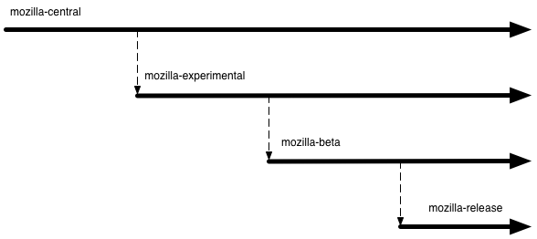
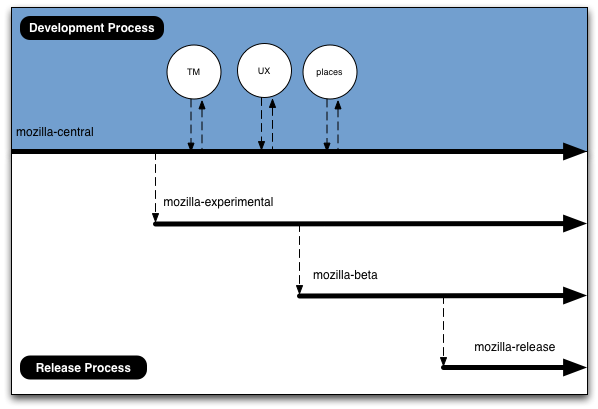
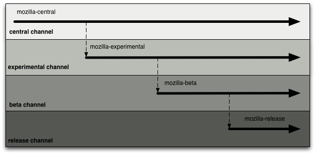
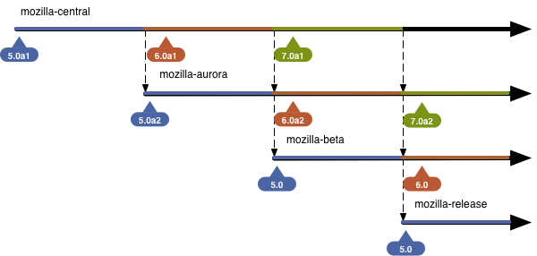
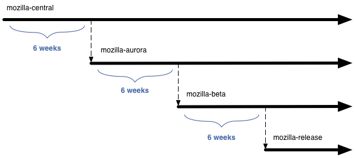
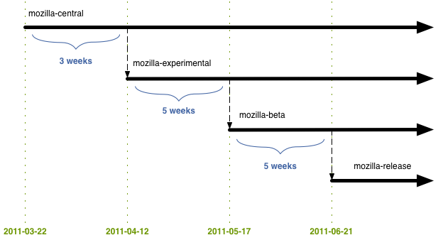

Mozilla Firefox: Development Specifics
Status: Draft
Overview
This document discusses specifics related to Mozilla's newly proposed Firefox development model.
Please note this is a draft document and subject to change.
Discussion should take place on dev-planning and changes should be submitted as pull requests on GitHub.
Main Repositories

-
mozilla-central
Just like the current repository
-
mozilla-aurora
Stabilize work done on mozilla-central for release
-
mozilla-beta
Fix any issues that come up during the beta validation of the mozilla-aurora stabilization
-
mozilla-release
Repository for code to generate officially released Firefox binaries
Why not copy to releases/mozilla-X.Y? We currently do so to have a repo to use for .x releases. Because this new model doesn't have .x releases (only chemspill/rapid response updates) we don't need to copy to the releases directory and deal with the version naming. That being said, we could still do so if we wanted to but there doesn't appear to be much benefit/point. Please give feedback.
The general naming scheme should work equally well for other products if they decide to follow the same development/channel/repo model. Also note if in the future Firefox releases split from platform releases the naming scheme does not need to change...we would merely create firefox-* repositories.
mozilla-central was chosen as the main development repository name due to familiarity, to prevent developers from having to alter their local repos, and to prevent needless changes to tools.
Development vs Release
The repositories can generally be grouped into two overall processes: development and release. Project repositories and mozilla-central are part of the development process. The downstream repositories are part of the release process.
This document mainly covers the release process. Details about project pages, feature tracking, and bug management are out of scope for this proposal and will be discussed soon.

Update Channels

-
nightly
Current Users 50,000 Anticipated Users 100,000 Type of User Mozilla developers and power users willing to risk massive instability to see and test the latest fixes Anticipated Update Rate nightly Signed No Branded Not branded as Firefox, uses new "Nightly" icon Our current nightly audience.
-
aurora
Current Users 0 Anticipated Users 1 million Type of User Power users willing risk instability to see and test the latest fixes. There are higher stability expectations versus nightly Anticipated Update Rate nightly Signed No Branded Not branded as Firefox, uses new "Aurora" icon This is a new channel. We will discuss populating this channel artificially if need be. The hope is people will self-select into this channel (either by downloading a build or using the in-product channel switcher) due to the balance of new features and stability.
-
beta
Current Users 2.78 million Anticipated Users 10 million Type of User Current beta channel users Anticipated Update Rate weekly (highly dependent on found issues) Signed Yes, same as release Branded Branded as Firefox This is the current beta channel / audience.
-
release
Current Users 100+ million Anticipated Users 100+ million Type of User Normal Firefox users Anticipated Update Rate 6-12 weeks Signed Yes Branded Branded as Firefox This is the current release channel. When a build is offered on this channel it means a new version of Firefox has been officially released.
What Happens Where?
-
mozilla-central
- General development
- Project repository merges
- en-US changes
- Some localization
- Merge from mozilla-shadow into mozilla-central just before the mozilla-central → mozilla-aurora merge point (additional details below)
-
mozilla-aurora
- Preffing off and backing out fixes/features which the central channel exposes as problematic with a wider audience.
- Remaining localizations
- Landing spot fixes to get the product in a shipping state
- Merge from mozilla-shadow (see below) and fixes/backouts for any resulting issues
- Preffing off and backing out fixes/features which were deemed ready but testing determined they in fact were not
-
mozilla-beta
- Fixes for newly-found issues which would prevent a final release
- In extreme cases backouts / pref offs
-
mozilla-release
- Nothing is landed. The repo is just for reference and available for cloning if a rapid response release is needed
Versioning
Because updates are (intended) to be silent and automatic we can generally assume a user on a given channel is on the latest available build. This assumption simplifies things greatly.
Firefox Versioning
Unless major issues are discovered with the scheme, this is how builds in the assorted repositories will identify themselves:

The following considerations are reflected in the versioning scheme:
- No "pre" as there are known issues with sites sniffing builds as Palm Pre devices
- Ease of version comparisons between channels and releases
- Amount of changes required to existing tools and systems
- Ability to identify which channel a user is on from the build
- Beta and release versions should identify as the same version to make sure beta testing is valid and no last-minute issues are found due to a version change
We aren't using "a" and "b" as it would be confusing as it relates to aurora and beta.
Gecko versioning
Gecko versioning will tie into Firefox versioning regardless of the Firefox version scheme above. For Firefox 5, the gecko version will be 5.0, for Firefox 6, 6.0, etc.
Please note that binary extensions will already need to be recompiled for Firefox 5.
Project Repositories
Project repositories are cheap and developers should not hesitate to ask for one.
Project repositories should be grouped by team or area in subdirectories under hg.mozilla.org/projects. In this scheme Tracemonkey can be found at hg.mozilla.org/projects/js/tracemonkey. Additional repos for the js team would be created in hg.mozilla.org/projects/js as well. This should keep hg.mozilla.org organized and enable automated tools to enumerate the available project repositories easily.
Please note the above naming convention is different from what was used in the past. Existing project repositories may need to be moved around to fit in with the new scheme.
Project repositories automatically get an update channel when nightly builds are enabled. The naming convention for the channel is the path from root repo, with slashes converted to dashes. For the Tracemonkey example above, builds would be generated and posted to projects-js-tracemonkey.
Developers may also wish to check out one of the already existing disposable project repositories.
These naming conventions for project repositories have not been widely discussed yet. Please give feedback.
The Shadow Repository
Having a restricted shadow repository is new to Mozilla. We are trying to balance the fact we are open source with the need to secure our users by not publishing information about security vulnerabilities before our users are protected.
Most developers and users need not worry or care about mozilla-shadow, so feel free to ignore it (most of the graphics omit it for clarity).
mozilla-shadow
- Shadows mozilla-central and takes additional security fixes
- Merges into mozilla-central just before the mozilla-central → mozilla-aurora merge point
shadow channel
| Current Users | 0 |
|---|---|
| Anticipated Users | ~10 |
| Type of User | The security team and QA |
| Anticipated Update Rate | nightly |
| Branded | Not branded as Firefox |
Localization
Localization work will be split into similar repositories:
- http://hg.mozilla.org/l10n-central/
- http://hg.mozilla.org/releases/l10n/mozilla-aurora
- http://hg.mozilla.org/releases/l10n/mozilla-beta
- l10n-release
There will be 8 or so locales that track mozilla-central, localizing alongside en-US development. Other locales can track mozilla-central if they would like to as well but they won't be asked to explicitly.
TBD: Which specific 8 or so locales are best to follow mozilla-central? This seems to be a combination of locales comfortable localizing before string freeze, and also locales that are useful to developers, like right-to-left for example.
mozilla-central will be string frozen for en-US at the mozilla-central → mozilla-aurora merge point. No en-US string changes will be allowed on mozilla-aurora. The mozilla-central → mozilla-aurora merge date will happen on schedule so the string freeze should not come as a surprise.
For locales that don't track mozilla-central, their work is done in l10n-aurora, which tracks mozilla-aurora. This means most locales have 6 weeks to complete their localizations.
Schedule of Important Milestones
In general, each stage of the process (and activity pertaining to a particular version) lasts for 6 weeks.

Firefox 5
Firefox 5 will be slightly different from future releases due to the development overlap (or lack thereof) with Firefox 4:

Rather than 6 weeks for mozilla-central, mozilla-aurora, and mozilla-beta we instead have 3 weeks for development on mozilla-central, 5 weeks to converge and stabilize on mozilla-aurora, and 5 weeks to validate on mozilla-beta.
Firefox 6
Firefox 6 will start the normal schedule where every step in the cycle takes 6 weeks. Firefox 6's development cycle starts when Firefox 5 is cloned from mozilla-central to mozilla-aurora (on 2011-04-12).
Please do note that chemspills / rapid response updates are not reflected in these schedules and will be dealt with on an as-needed basis.
Cloning Mechanics
The following describes the mozilla-central to mozilla-aurora mechanics. mozilla-aurora to mozilla-beta mechanics follow the same steps, with the exception of tagging (use BETA_BASE_YYYYMMDD), and versioning (strip off the a2 suffix).
- Never delete the aurora repo, we need the history.
- Tag m-c with AURORA_BASE_YYYYMMDD.
hg tag -R mozilla-central AURORA_BASE_`date +%Y%m%d` hg out # review hg push - Tag and close old head on aurora.
hg tag -R mozilla-aurora -r default FIREFOX_AURORA_VERSION hg commit -R mozilla-aurora -r default --close-branch -m 'closing old head' - Pull from m-c to a new head on aurora.
hg pull -R mozilla-aurora -r AURORA_BASE_YYYYMMDD http://hg.mozilla.org/mozilla-central - Bump aurora version.
cd mozilla-aurora sed -i -e 's/a1/a2/g' browser/config/version.txt js/src/config/milestone.txt config/milestone.txt (manually edit mobile/confvars.sh to bump the version) hg commit -m 'Version bump' - Bump mozilla-central version. (manually edit mobile/confvars.sh to bump the version)
- Set aurora branding in browser/confvars.sh (MOZ_BRANDING_DIRECTORY=browser/branding/aurora)
- Human needs to review list of changes since the last AURORA_BASE_YYYYMMDD tag, and figure out which changes to bring forward, and which changes to throw away.
- Use "hg transplant" to take the changes we want to bring forward and bring over to the new head.
- Human needs to resolve any merge conflicts.
Note: some specific files need careful human review of any changes, even if there are no merge conflicts. all.js, firefox.js, configure.in, mozconfig - Human needs to "hg push" back to mozill-aurora
Rapid Release / Chemspill Updates
We are still in the information gathering phase and will have this section filled out in the next couple of days.
General Observations
Deferring work
No work is deferred from upstream repos to downstream repos. If your feature / change isn't finished on mozilla-central, mozilla-aurora is not the place to fix it up. If there is outstanding work on mozilla-aurora do not plan to fix it in mozilla-beta. The clone / pull dates are published far in advance so there should be ample time to plan. If it's not ready it should be backed out or preffed off. There will be another release in 6-12 weeks for the fix to try to make it in again.
Time-based cloning
Cloning between repos will happen on schedule. Again, consistency is key. Groups will be able to plan and won't need to be intimately involved with the release process to know where fixes are and where fixes should be landed.
The merge between release repos should be automatic
When the time comes to merge upstream release repositories with downstream repositories we are essentially replacing the downstream repository with a copy of the upstream. Because the merge/clone should never fail and it happens on a set schedule it will likely be automated.
Please note in the section above there is still discussion on what can be automated and the proper version control mechanics.
Preffing off / backing out happens after the clone
When cloning from mozilla-central to mozilla-aurora the backouts and pref offs take place on the mozilla-aurora repo. This allows mozilla-central to use the complete allotted time for development and utilizes mozilla-aurora's time for convergence.